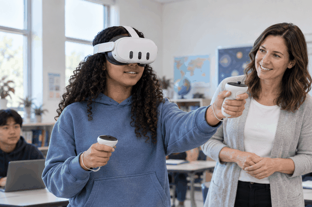
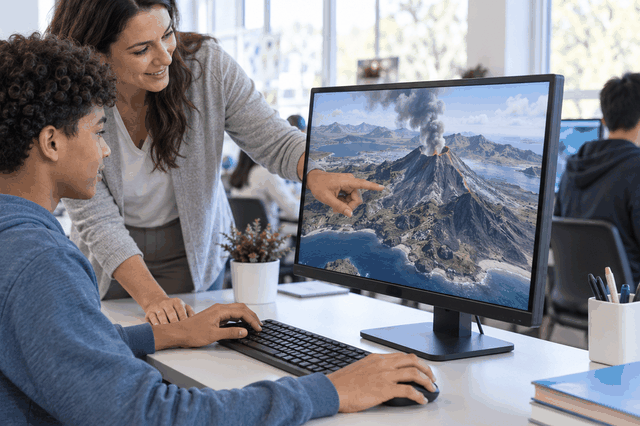

Difference Between HMD, Desktop VR, and 360° Video
| Comparison Category | HMD (Head-Mounted Display) | Desktop VR | 360° Video |
|---|---|---|---|
| Visual example |  |
 |
|
| Basic Definition | A wearable device that displays a virtual environment directly in front of the user’s eyes. | A virtual environment experienced through a computer screen. | A pre-recorded panoramic video that allows users to look around in different directions. |
| Main Equipment | VR headset, controllers, and sometimes motion sensors. | Desktop or laptop computer, monitor, keyboard, mouse, or game controller. | Smartphone, tablet, computer, or VR headset. |
| Level of Immersion | High; the headset covers much of the user’s field of view. | Moderate; the user views the virtual environment on a flat screen. | Moderate; users can look around but usually cannot move freely. |
| Interaction | Users can interact with the virtual environment using controllers, hand gestures, or head movements. | Users primarily interact with a keyboard, mouse, or game controller. | Interaction is usually limited to changing the viewing direction. |
| Movement | Users may be able to walk, turn, or move around in the virtual environment. | Movement is usually controlled with a keyboard, mouse, or controller. | Users typically remain in the original filming position. |
| Viewpoint | Changes in real time according to the user’s head and body movements. | Controlled by the mouse, keyboard, or controller. | Users can look up, down, left, and right. |
| Degrees of Freedom | Often supports six degrees of freedom (6DoF). | Depends on the software; usually provides limited movement. | Usually supports three degrees of freedom (3DoF). |
| Typical Content | Interactive simulations, virtual laboratories, training programs, and VR games. | 3D software, simulations, games, and virtual learning platforms. | Virtual tours, documentaries, campus tours, and recorded events. |
| Educational Uses | Hands-on practice, simulations, technical training, and immersive learning. | Software training, design activities, data analysis, and virtual demonstrations. | Observing real-world locations, virtual field trips, and environmental exploration. |